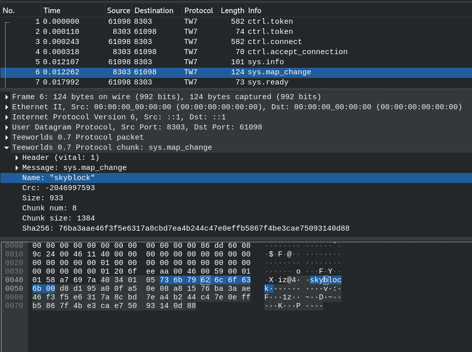

The teeworlds 0.7 network protocol
This is an effort to document the network protcol of the game teeworlds.
Only looking at the 0.7.x implemenations. The 0.5.x and 0.6.x implemenations are slightly different and incompatible.
All packets are prefixed with a [SOURCE->DESTINATION] indicating who is sending the packet to who.
The packets are listed in the order they are supposed to be send when a client connects to a server.
The packet content is displayed as space seperated hexadecimal encoded bytes.
So 01 means that the bits 00000001 are sent via the network.
And FF means that the bits 11111111 are sent via the network.
This matches the output of the network dumping tool tcpdump.
If you have tcpdump installed on your system you can print teeworlds traffic using this command:
tcpdump -nX -i lo "port 8303"
Assuming your loopback network interface is called lo and you have a teeworlds server running on its default port 8303.
Instead of printing packets to the terminal you can also save them to a pcap file using:
tcpdump -nX -i lo -w tw.pcap "port 8303"
Which then can be loaded using wireshark. If you are motivated to compile and install a custom dissector I can highly recommend.
The dissector from libtw2 by heinrich5991

which adds nice teeworlds related annotations to the packets.
Community projects
If you are reading this chances are you might find the community projects useful that reimplemented teeworlds protocols (0.6/0.7) in other programming languages:-
libtw2 - A collection of rust tools/libraries for teeworlds containing
- A wireshark dissector
- A huffman compression implemenation
- A server implementation (not feature comeplete yet)
- TeeSharp - Teeworlds / DDraceNetwork modding platform in .NET
- tw-chatonly - teeworlds client/library, made in typescript
- rustyman - Huffman compression and decompression implemented in rust
- huffman_tw - The teeworlds C++ huffman compression code wrapped as a ruby gem
[CLIENT->SERVER] Hello server this is my token
The first packet that is being sent is from the client to the server.
The only data that is being transmitted is the security token from the client.
The packet header contains FF FF FF FF as placeholder for the server token.
Since the client does not know the server token yet.
At the end this packet contains 501 nullbytes to prohibit reflection attacks.
Those nullbytes are not shown below.
<04 00 00 FF FF FF FF><05><51 3B 59 46>
^ ^ ^
size=7 flags=1 | client token
NET_CTRLMSG_TOKEN
[SERVER->CLIENT] Hello client this my token
As a response to the clients hello the server answers with its token. So after the packet header containing the clients token. The only data that is being sent. Is the servers security token.
<04 00 00 51 3B 59 46><05><C0 7D 1E 5E>
^ ^ ^ ^
size=7 flags=1 | | server token
| NET_CTRLMSG_TOKEN
client token
[CLIENT->SERVER] Connect
After server and client exchanged tokens the client will once again send its token. This time setting the Control Message to NET_CTRLMSG_CONNECT to initiate the connection. At the end this packet contains 501 nullbytes to prohibit reflection attacks. Those nullbytes are not shown below.
<04 00 00 C0 7D 1E 5E><01><51 3B 59 46>
^ ^ ^ ^
size=7 flags=1 | | client token
server token NET_CTRLMSG_CONNECT
[SERVER->CLIENT] Accept connection
If this packet is sent the server log will show this message.
[2022-10-25 14:22:25][connection]: got connection, sending accept
<04 00 00 51 3B 59 46><02>
^ ^ ^
size=7 flags=1 | |
| NET_CTRLMSG_ACCEPT
client token
[CLIENT->SERVER] Version and password
Now the client will inform the server about its version.
This packet is defined in
CClient::SendInfo()
and contains the password, the network hash and the supported protocol version.
The vanilla client always sends the password that was entered last by the user.
No matter which server it is connecting to also if the server does not expect a password.
This is nice since it minimizes user input even if the ip changes or multiple servers have the same password.
But it is leaking the password you entered last to every server you connect to.
That is why the ddnet client decided to only send the password after user confirmation.
If the server receives this packet it will log the following line.
[2022-10-25 14:22:25][connection]: connecting online
Since the packet payload now contains uncompressed printable ASCII characters those are included below.
You can quickly identify this packet when running tcpdump with the -Xflag.
[PACKET HEADER]
00 00 01 C0 7D 1E 5E
^
server token
[PACKET PAYLOAD HEX] [PACKET PAYLOAD ASCII]
40 28 01 03 30 2E 37 20 38 30 32 66 @(..0.7 802f
31 62 65 36 30 61 30 35 36 36 35 66 1be60a05665f
00 6D 79 5F 70 61 73 73 77 6F 72 64 my_password
5F 31 32 33 00 85 1C 00 _123...
[SERVER->CLIENT] Map info
Now the server is informing the client about the map. This is NOT the mapfile it self. Just its metadata. To see what exactly is being sent checkout the code of CServer::SendMap it boils down to this:
String GetMapName()
Int m_CurrentMapCrc
Int m_CurrentMapSize
Int m_MapChunksPerRequest
Int MAP_CHUNK_SIZE
Raw m_CurrentMapSha256
In the ASCII representation of the packet you can spot the mapname.
In this case the map is called
skyblock.
[PACKET HEADER]
00 01 01 51 3B 59 46
[PACKET PAYLOAD HEX] [PACKET PAYLOAD ASCII]
40 34 01 05 73 6B 79 62 6C 6F 63 6B @4..skyblock
00 D8 D1 95 A0 0F A5 0E 08 A8 15 76 ...........v
BA 3A AE 46 F3 F5 E6 31 7A 8C BD 7E .:.F...1z..~
A4 B2 44 C4 7E 0E FF B5 86 7F 4B E3 ..D.~.....K.
CA E7 50 93 14 0D 88 00 ..P....
[CLIENT->SERVER] Ready
If the client already has the map or finished the download process it will respond with the ready packet.
The map download packets are yet to be documented.
If the server gets this packet it will print the following log line.
[2022-10-25 14:22:25][server]: player is ready. ClientID=0 addr=[0:0:0:0:0:0:0:1]:61985
The client sends the enum NETMSG_READY which has the value 18 but as a packed Integer tangled in with the system flag.
This is how the server unpacks this message id:
int Msg = Unpacker.GetInt();
int Sys = Msg&1;
Msg >>= 1;
So in the raw packet data detecting the NETMSG_READY flag is tricky.
Here some python code that unpacks
NETMSG_READY to the Integer 18 given the raw byte 0x25
msg = 0x25
msg >>= 1
print(msg) # => 18 (NETMSG_READY)
<00 01 01 C0 7D 1E 5E><40 01 02> 25
^ ^ ^ ^
size=7 flags = 0 | ChunkHeader NETMSG_READY
server token
[SERVER->CLIENT]
Now the server sends the first packet with a compressed payload. It is using huffman compression to do so.
<10 02 03 51 3B 59 46> 4A 42 88 4A 6E 16 BA 31 46 A2 84 9E BF E2 06
^ ^ ^
size=7 client token compressed data
flags = 4
(COMPRESSION)
The payload (without the header) decompresses to this
<40 02> 02 02 00 40 07 03 22 01 00 01 00 01 08 40 01 04 0B
^
ChunkHeader: size = 2 flags = 1 (NET_CHUNKFLAG_VITAL)
[CLIENT->SERVER] Start info (skin data)
Now the client calls CGameClient::SendStartInfo()
which sends all the needed infos to render a tee in the world: Name, Clan, Country, Skinparts
You can see in the ASCII output that this client is connecting with the name nameless tee
and with an empty clantag. You can also identify the skinpart names duodonny and standard (falls back to default).
[PACKET HEADER]
00 04 01 C0 7D 1E 5E
[PACKET PAYLOAD HEX] [PACKET PAYLOAD ASCII]
41 19 03 36 6E 61 6D 65 6C 65 73 73 A..6nameless
20 74 65 65 00 00 40 73 70 69 6B 79 tee..@spiky
00 64 75 6F 64 6F 6E 6E 79 00 00 73 .duodonny..s
74 61 6E 64 61 72 64 00 73 74 61 6E tandard.stan
64 61 72 64 00 73 74 61 6E 64 61 72 dard.standar
64 00 01 01 00 01 01 01 A0 AC DD 04 d...........
BD D2 A9 85 0C 80 FE 07 80 C0 AB 05 ............
9C DE AA 05 9E C9 E5 01 ........
[SERVER->CLIENT]
[PACKET HEADER]
00 03 03 51 3B 59 46
[PACKET PAYLOAD HEX] [PACKET PAYLOAD ASCII]
40 01 05 16 41 05 06 0C A8 0F 88 03 @...A.......
32 A8 14 B0 12 B4 07 96 02 9F 01 B0 2...........
D1 04 80 7D AC 04 9C 17 32 98 DB 06 ...}....2...
80 B5 18 8C 02 BD 01 A0 ED 1A 88 03 ............
BD 01 B8 C8 21 90 01 14 BC 0A A0 9A ....!.......
0C 88 03 80 E2 09 98 EA 01 A4 01 00 ............
A4 01 A4 01 40 01 07 10 ....@...
[CLIENT->SERVER] Enter game
Now the client sends NETMSG_ENTERGAME (19) using CClient::SendEnterGame()
Keep in mind those net messages are packed and mixed with the system flag. So hex 0x27
will be unpacked to the integer 19.
If the server gets this packet it will print the following log line.
[2022-10-25 14:22:25][server]: player has entered the game. ClientID=0 addr=[0:0:0:0:0:0:0:1]:61985
<00 07 01 C0 7D 1E 5E> <40 01 04> 27
^ ^ ^
server token ChunkHeader NETMSG_ENTERGAME
[SERVER->CLIENT] Server info
The server sends version, map name, gametype, playerlist and more prepared in the method
CServer::GenerateServerInfo(CPacker *pPacker, int Token)
Since this server is empty the packet data does not include any player data.
[PACKET HEADER]
00 04 01 51 3B 59 46
[PACKET PAYLOAD HEX] [PACKET PAYLOAD ASCII]
40 29 08 09 30 2E 37 2E 35 00 75 6E @)..0.7.5.un
6E 61 6D 65 64 20 73 65 72 76 65 72 named server
00 00 73 6B 79 62 6C 6F 63 6B 00 44 ..skyblock.D
4D 00 00 01 01 08 01 08 M.......
[SERVER->CLIENT]
Since it is compressed below only the first few bytes are shown.
<10 04 03 51 3B 59 46> 4A 36 4C ED E1 47 DE...
^ ^
client token compressed payload
Here is what it decompresses to. Again NETMSG_SERVERINFO (4)
is extracted out of 0x26 together with the system flag.
[PACKET HEADER]
10 04 03 51 3B 59 46
[PAYLOAD HEADER]
<40 06><09> 26 00 14 00 00 01 41 1D 0A @..&.....A..
^ ^
Flags & Size |
NETMSG_SERVERINFO
[PACKET PAYLOAD HEX] [PACKET PAYLOAD ASCII]
24 00 01 00 6E 61 6D 65 6C 65 73 73 $...nameless
20 74 65 65 00 00 40 73 70 69 6B 79 tee..@spiky
00 64 75 6F 64 6F 6E 6E 79 00 00 73 .duodonny..s
74 61 6E 64 61 72 64 00 73 74 61 6E tandard.stan
64 61 72 64 00 73 74 61 6E 64 61 72 dard.standar
64 00 01 01 00 01 01 01 A0 AC DD 04 d...........
BD D2 A9 85 0C 80 FE 07 80 C0 AB 05 ............
9C DE AA 05 9E C9 E5 01 00 00 33 11 ..........3.
AE 01 AF 01 84 11 2B 00 03 00 06 00 ......+.....
00 01 00 0A 00 A6 01 90 04 91 02 00 ............
80 02 00 00 00 40 00 00 90 04 90 02 .....@......
00 00 0A 00 0A 01 00 00 00 0B 00 08 ............
00 00 00 00 ..
[SERVER->CLIENT]
Since it is compressed below only the first few bytes are shown.
<10 04 01 51 3B 59 46> B5 36 45 11 5D 86 1A...
^ ^
client token compressed payload
Here is what it decompresses to. Again NETMSG_SNAPSINGLE (8)
is extracted out of 0x11 together with the system flag.
[PACKET HEADER]
10 04 03 51 3B 59 46
[PAYLOAD HEADER]
<00 33><11> B8 01 B9 01 84 11 2B 00 03 .3.......+..
^ ^
Flags & Size |
NETMSG_SNAPSINGLE
[PACKET PAYLOAD HEX] [PACKET PAYLOAD ASCII]
00 06 00 00 01 00 0A 00 A6 01 90 04 ............
91 02 00 80 02 00 00 00 40 00 00 90 ........@...
04 90 02 00 00 0A 00 0A 01 00 00 00 ............
0B 00 08 00 00 00 00 00 .....
[CLIENT->SERVER] Client Input (hook/move/fire/jump)
Also the client uses huffman compression to send its inputs. It makes a call to CClient::SendInput() which sends the the acknowledged gametick and the prediction tick so the server knows which snapshots to (re)send. After that it packs a bunch of integers representing the following struct
struct CNetObj_PlayerInput
{
int m_Direction;
int m_TargetX;
int m_TargetY;
int m_Jump;
int m_Fire;
int m_Hook;
int m_PlayerFlags;
int m_WantedWeapon;
int m_NextWeapon;
int m_PrevWeapon;
};
The inputs are only sent if there is new data.
If there is none it will only acknowledged the gameticks.
So the compressed data that is sent via the network looks like this.
<10 0A 01 C0 7D 1E 5E> 4D E9 B0 14 7E 13 D6 F8 6F 57 DC 00
^ ^
size=7 compressed payload
flags = 4 (COMPRESSION)
Here is what it decompresses to. Again NETMSG_INPUT (20)
is extracted out of 0x29 as seen in this python snippet:
msg = 0x29
msg >>= 1
print(msg) # => 20 (NETMSG_INPUT)
[PACKET HEADER]
10 0A 01 C0 7D 1E 5E
[PACKET PAYLOAD]
<00 11> 29 82 02 83 02 28 00 01 00 00 00 00 00 00 00 00 05
^ ^
ChunkHeader |
size = 17 NETMSG_INPUT
flags = 0
[CLIENT->SERVER] Client says bye
[SERVER->CLIENT] Server says bye
If a client is properly shutdown or the user presses the disconnect button.
CNetConnection::Disconnect(const char *pReason)
sends a NET_CTRLMSG_CLOSE (4). The same can also be sent by the server if it shutdowns for example.
At the end optionally this packet can contain a string containing the reason of closing the connection.
You probably have seen those disconnect messages in the chat already:
*** 'nameless tee' has left the game (Timeout)
*** 'nameless tee' has left the game (Too weak connection (not acked for 10 seconds))
*** 'hacker' has left the game (custom message)
The server can also use this reason to show a custom shutdown message to the client.
<04 0A 00 C0 7D 1E 5E><04>
^ ^ ^
size=7 client/server NET_CTRLMSG_CLOSE
flags=1 token